Descubra as riquezas naturais e culturais de Calheiros e Ponte de Lima
Reservar AgoraExplore trilhas deslumbrantes e paisagens culturais únicas na região do Minho
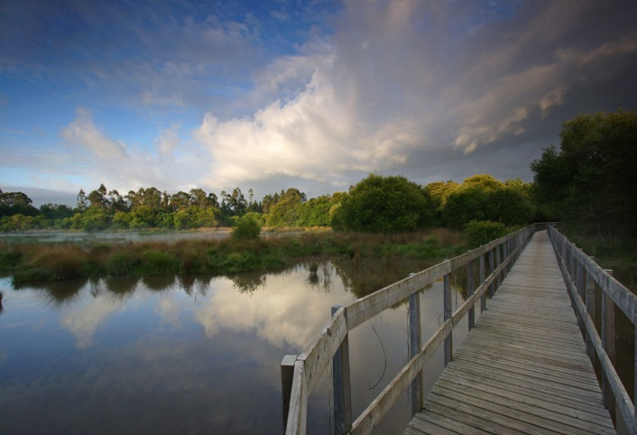
Destaques: Lagoa de S. Pedro d'Arcos, observação de aves, nenúfares em flor e passadiços de madeira. Ideal para famílias e amantes da natureza.
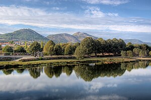
Destaques: Rio Estorãos, bosques autóctones, avifauna e paisagens ribeirinhas. Perfeito para caminhadas relaxantes.
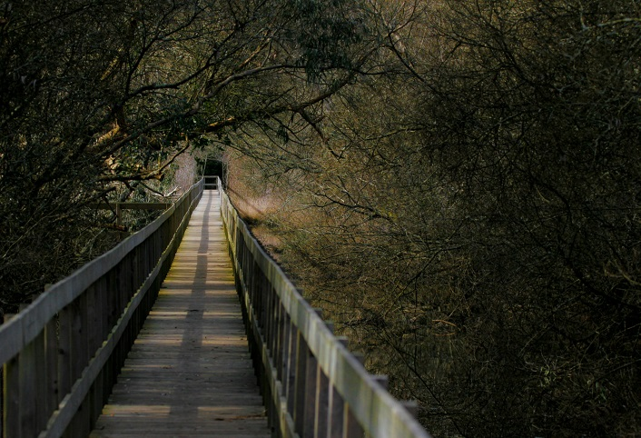
Destaques: Lagoa do Mimoso, Quinta de Pentieiros, pontes históricas e paisagens culturais. Uma imersão na natureza e cultura local.
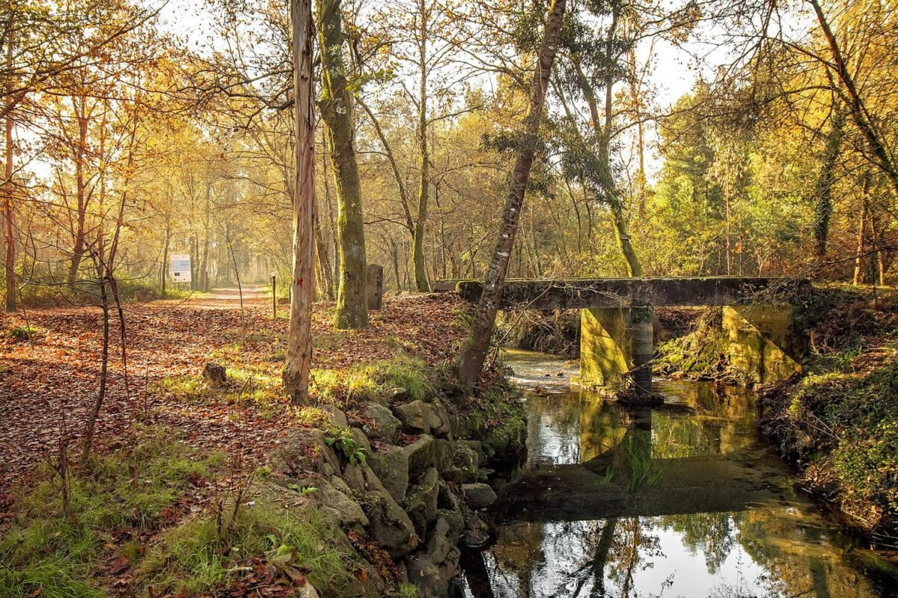
Destaques: Passadiços de madeira, observação de aves e flora diversificada. Um passeio tranquilo em área protegida.
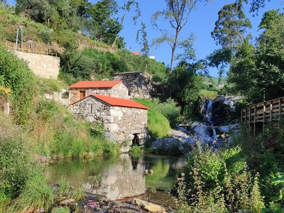
Destaques: Moinhos, riachos, miradouros naturais e vegetação autóctone. Ideal para quem busca uma conexão mais profunda com a natureza.
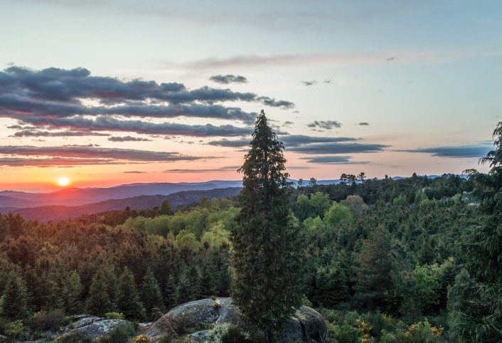
Destaques: Conecta áreas protegidas como as Lagoas de Bertiandos, Corno de Bico e Serra d'Arga. Oferece experiências de natureza, cultura e gastronomia.
Um marco cultural e histórico na região de Ponte de Lima
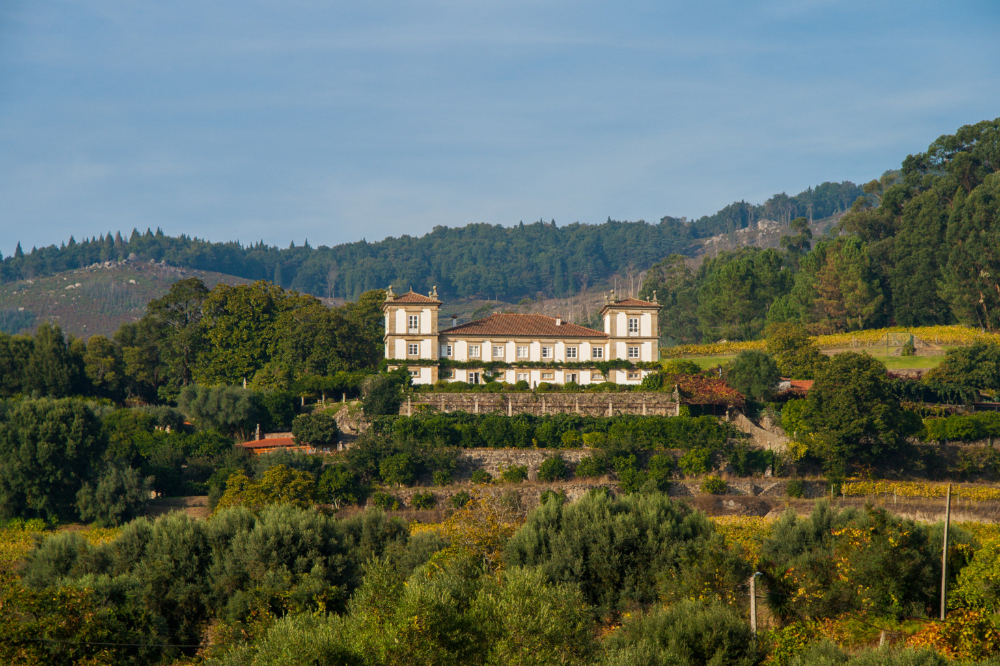
Além dos percursos naturais, o Paço de Calheiros é uma atração imperdível. Esta casa senhorial do século XVII oferece vistas panorâmicas sobre o vale do Lima, jardins históricos e experiências de enoturismo. É um excelente ponto de partida para explorar os trilhos da região.
Momentos capturados nos passeios culturais de Calheiros e Ponte de Lima
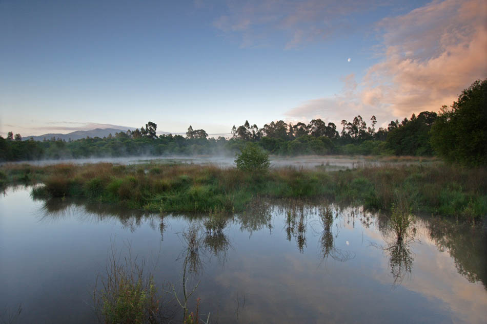
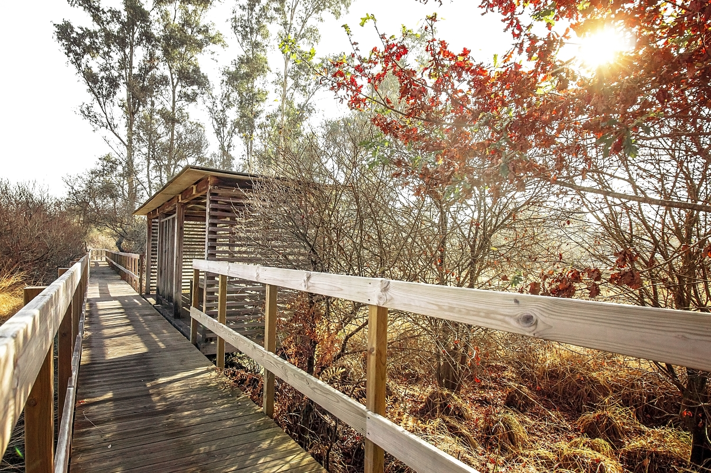
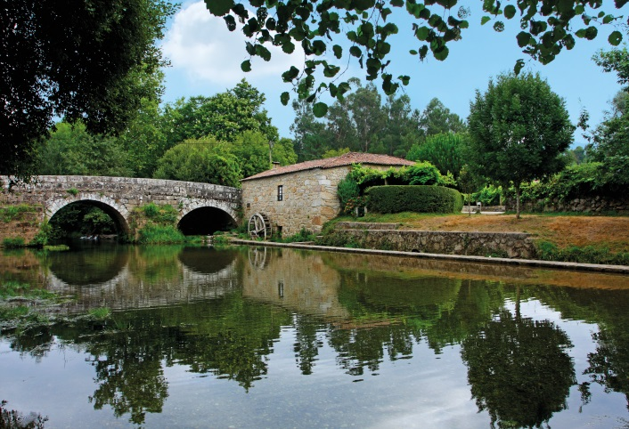
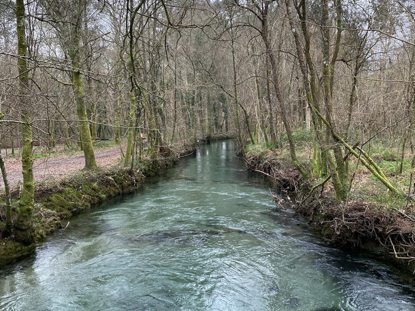
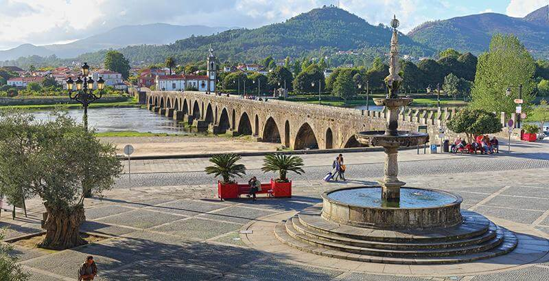
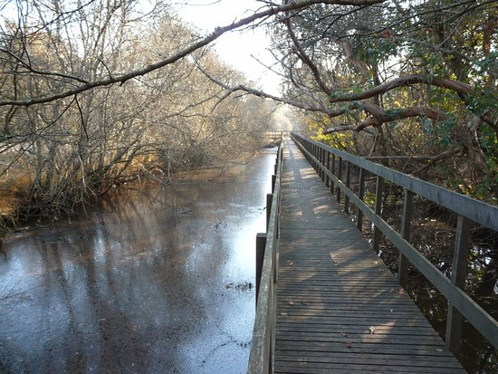

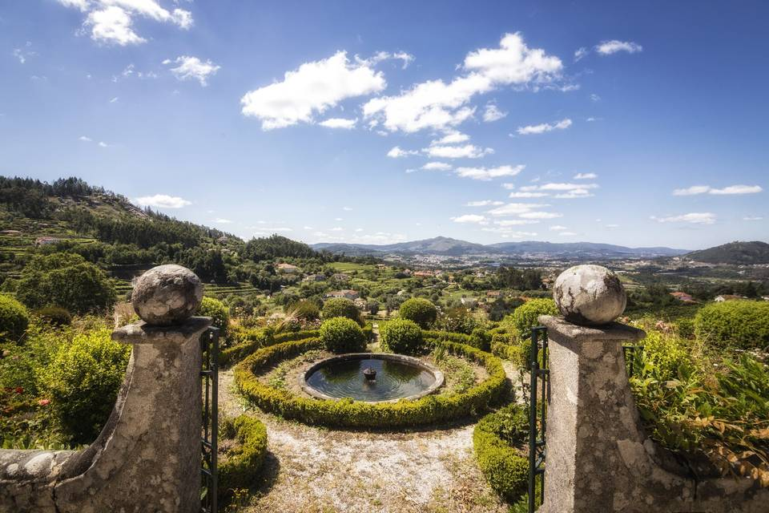
Explore no mapa os principais pontos de interesse cultural e natural da região
Assistente Virtual da Quinta Flores